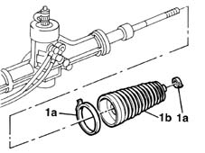

4130A20 l/h or r/h power steering case boot (one) - replace at bench
- Path
- Procedures > 41 STEERING > 4130 POWER ASSISTED STEERING > 4130A power steering box > 4130A20 l/h or r/h power steering case boot (one) - replace at bench
- Kind
- repair procedure (removal / refitting; the operation number is the code)
- Applies to
- all engines; all production periods
- Interactive page
- https://sloeber94.github.io/elrnDB-fMltpl/en/#/2891687
Applies to: all engines; all production periods
4110B14 steering links - r+r with steering box removed
1. Remove the clips (1a) and withdraw the power steering box dust excluder (1b).

Applies to: all engines; all production periods
Fit the new power assisted steering box boot and fix it using the new bands.